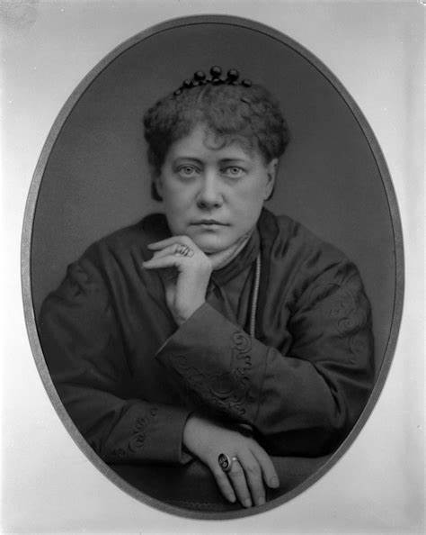

Es un sistema de pensamiento que se desarrolló a fines del siglo XIX. Su nombre proviene del griego: "theos" (Dios) y "sophia" (Sabiduría). Fundada por Helena Blavatsky, la teosofía no se considera una religión en sí misma, sino más bien una transmisión moderna de una "religión universal" que, según Blavatsky, existió en lo más profundo del pasado humano.
Blavatsky describió la teosofía como "la síntesis de la ciencia, la religión y la filosofía". Según ella, la teosofía estaba reviviendo una "Sabiduría Antigua" que subyacía en todas las religiones del mundo.
La teosofía sostiene que todas las religiones tienen una verdad esencial común y que el estudio comparativo de religión, ciencia y filosofía puede ayudar a descubrir esta verdad subyacente. Los teósofos creen en la existencia de una hermandad de maestros espirituales que poseen gran sabiduría y poderes sobrenaturales, y que estos maestros han transmitido sus enseñanzas a través de Blavatsky.
Helena Petrovna Blavatsky (1831-1891) fue una figura intrigante y controvertida. Nacida en Rusia, se convirtió en una de las exponentes más visibles del esoterismo europeo del siglo XIX.
Blavatsky fue discípula de Eliphas Lévi y cofundadora destacada del Movimiento Teosófico. Su obra más influyente es "La Doctrina Secreta". Aunque su figura sigue siendo relevante hoy en día, es importante señalar que sus ideas han generado controversia. Ella asociaba estrechamente la teosofía con las doctrinas esotéricas del hermetismo y el neoplatonismo.
En resumen, la teosofía de Blavatsky busca una síntesis de sabiduría espiritual, científica y filosófica, y su legado sigue siendo objeto de estudio y debate en círculos esotéricos y místicos.
